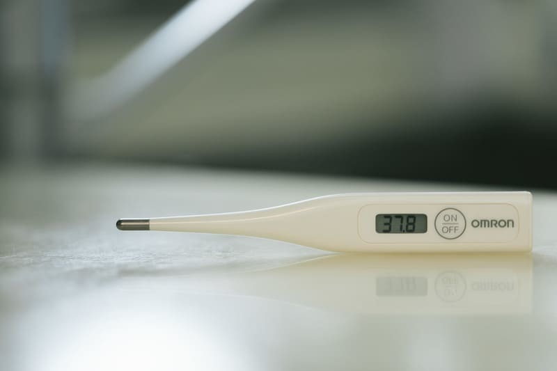
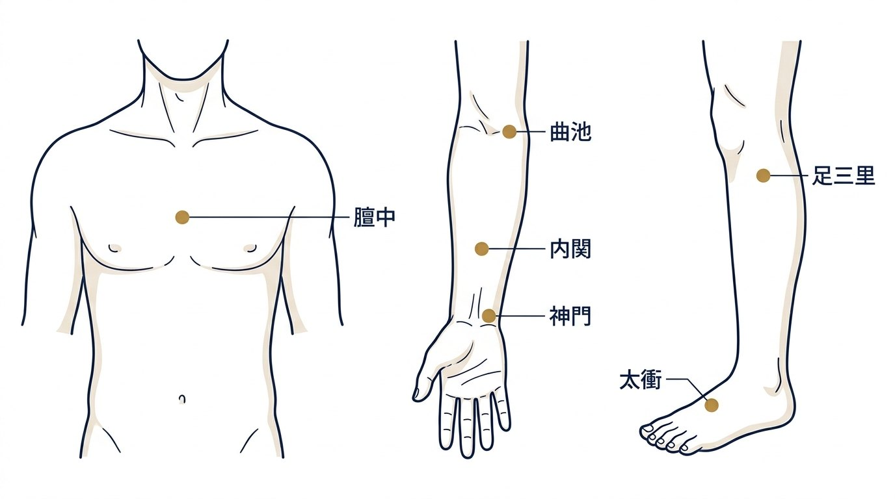

心内膜炎の鍼灸
心臓の内側を覆う心内膜や弁に疣贅などの異常構造物が生じる病気です。専門医での原因治療を最優先し、安定期の体調管理を支えます。
まず知っておきたい要点と改善の流れ
心臓の内面を裏打ちする心内膜や心臓の弁に、疣贅（ゆうぜい）と呼ばれるイボ状の塊が形成される状態です。病原体が血流から侵入する感染性と、がんや自己免疫疾患、血液凝固異常など病原体以外の要因で起こる非感染性に分けられます。非感染性心内膜炎では特にがんが原因となることが多く、形成された塊が剥がれて血管に詰まると塞栓症を引き起こす恐れがあるため、原因疾患の特定と専門医療機関での治療が不可欠です。（公式解説）
このようなお悩みはありませんか？
- ✓発熱や全身の倦怠感、関節痛・筋肉痛がある
- ✓食欲の低下や体重減少が続いている
- ✓息切れや動悸、胸の違和感が気になる
- ✓治療経過が安定した後の疲労感や心理的ストレスを和らげたい
当院の施術アプローチ・改善の流れ
なぜ鍼灸で改善へ向かうのか？（作用機序の図解）
心内膜炎に対する鍼灸は、心拍変動・血管トーンを整える自律神経サポート機序を通じて、お体本来の回復力を引き出します。

循環器専門医の標準治療を絶対前提とし、手首や背部の安全な経穴へ低刺激でアプローチします。
心臓への過剰な交感神経刺激を穏やかに鎮め、心拍リズムと血管緊張の急変を抑えます。
ストレスで固まりやすい胸郭や横隔膜の緊張を解き、酸素摂取とリラックス反応を促します。
内服管理を厳守しながら、疲労やストレスが引き金となる症状不安の軽減を支えます。
院長YouTube解説・関連動画
心内膜炎の症状は、発熱や倦怠感、体重の減少、食欲の低下など

心内膜炎の症状は、発熱や倦怠感、体重の減少、食欲の低下などです。血管が閉塞することによって糸球体腎炎の症状が見られることもあります。
疣贅は、非常にもろいため、はがれ落ちて全身の動脈に詰まることもあります。動脈に詰まると詰まった動脈の場所によって体の色々なところに影響が出ます。
脳の動脈が影響を受けた場合は脳梗塞が起こったり、眼球結膜が影響を受けた場合は眼球や眼底に出血斑がみられたりするのです。
心内膜炎は、感染した心内膜が炎症を起こす病状で、様々な症状を引き起こします。症状は病状の進行により異なりますが、一部は特定の感染源や一般的な健康状態にもよります。以下に、心内膜炎の典型的な症状を示します。
1. 発熱
心内膜炎の最も一般的な症状は発熱で、体温が上昇し、ふるえや寒気を感じることがあります。しかし、発熱は非特異的な症状であり、多くの病状で見られます。そのため、発熱があるだけでは心内膜炎の診断は難しいです。
2. 疲労感
心内膜炎ではしばしば疲労感や全身のだるさを訴えます。体が感染と闘っているため、全般的なエネルギーレベルが低下します。
3. 心の問題
心内膜炎は心臓に影響を及ぼすため、心臓関連の症状が現れることがあります。これには、心臓の鼓動（心拍）の異常、心音の異常（心雑音）、胸痛などが含まれます。また、感染が心臓の働きに影響を及ぼすと、息切れや体力の低下などの症状が生じることもあります。
4. 皮膚の変化
心内膜炎の一部の患者では、特徴的な皮膚の変化が見られます。これには、小さな出血点（ペチキア）や指先やつま先の小さな赤いまたは紫色の斑点（オスラー結節）、手掌や足底の赤み（ジャネウェイ皮疹）などがあります。
5. 眼の変化
一部では、結膜出血や虹彩の異常（ロススポット）が見られます。これらは血液の微小な塊（微小塞栓）が眼の血管を塞ぐ結果として生じます。
6. 呼吸困難
感染が心肺系に影響を及ぼすと、患者は深呼吸や激しい活動時に呼吸困難を経験することがあります。
7. 敗血症の症状
心内膜炎は、感染が血流に広がり全身に影響を及ぼす敗血症を引き起こす可能性があります。これには、高熱、速い心拍、早い呼吸、混乱などの症状があります。
8. 脳神経症状
感染が脳に広がった場合、頭痛、めまい、視覚障害、意識の混乱、発作などの神経学的症状が現れることがあります。
9. 関節痛や筋肉痛
心内膜炎では、全身的な炎症反応により関節痛や筋肉痛を感じることがあります。
これらは心内膜炎の一般的な症状であり、感染が体のどの部分に影響を及ぼすかにより、他にもさまざまな症状が生じることがあります。
心内膜炎を改善するためには、原因となっていることを改善することが大事です。
原因ががんの場合は、手術を行ったり、抗がん剤や放射線を使ったりしてがんの改善を行なっていきます。SLEの場合は、ステロイドなどの薬を使って改善を行います。
心内膜炎は深刻な病状であり、改善を行わないままでは生命を脅かす可能性があります。改善の主な目的は、感染の元である細菌や他の微生物を排除し、病状の進行を止めることです。
1. 抗生物質
心内膜炎の最初のステップは通常、抗生物質です。感染の元となる細菌の種類と感受性に応じて、最適な抗生物質が選択されます。抗生物質は通常、静脈（IV）を通じて投与され、最初の数日間は病院で改善を受けることが一般的です。その後、病状が安定すれば、在宅でのIV抗生物質に移行することができます。抗生物質は通常4〜6週間続けられます。
2. 手術
一部では、抗生物質だけでは不十分で、手術が必要となる場合があります。以下は心内膜炎の手術が必要となる一部の状況です。
感染がコントロールできず、抗生物質に反応しない場合、心臓弁が重度に損傷し、心臓の機能に影響を及ぼす場合、感染が血液塊（塞栓）を形成し、これが他の体部位に広がりを及ぼす可能性がある場合、再発性の心内膜炎の場合などです。
手術では、感染した心臓弁が修復または交換され、感染が拡大しないようにします。
3. 合併症の管理
心内膜炎は様々な合併症を引き起こす可能性があります。これらは脳への塞栓、心不全、心筋梗塞などの重篤な状態を含む可能性があります。そのため、改善の一環としてこれらの合併症の管理が必要となることがあります。
4. 終身管理
心内膜炎を経験した人は、再発を防ぐために定期的なフォローアップが必要です。これは、定期的に心臓を調べること、適切な抗生物質の予防投与、口腔衛生の良好な維持などを含みます。特に、外科的な弁の修復や交換を受けた場合は、抗凝固法や定期的なエコーカーディオグラムを必要とすることがあります。
また、心内膜炎のリスクを持つ個々に対する特別な注意が必要です。例えば、従来のリスク因子を持つ人々、特に観察が必要です。これらは、歯科の処置や一部の外科的処置前に予防的な抗生物質を受けることが推奨されます。
5. リハビリテーション
心内膜炎では身体的にも心理的にも負担が大きいため、全身のリハビリテーションが必要な場合があります。これは、身体的な力を取り戻すための身体療法、栄養状態の改善、心理的なサポートを含みます。
以上のように、心内膜炎の改善方法は多岐にわたります。ひとりひとりの具体的な病状や体調により、最適な方法は異なります。
心内膜炎の症状の現れ方や進み方は人によって違います。非常に少しずつでも進行する人もいれば、特徴的な症状がなかなか現れない人もいます。
一回病院に行っただけでは心内膜炎であると判断されず、時間が経ってから心内膜炎の特徴的な症状が揃ってくるということもあります。異変を感じたらすぐに病院に行くことをお勧めします。
循環器・動悸・高血圧・心不全補助の全身ツボ図解
実際の施術ではお一人おひとりの体質・症状に合わせて選穴しますが、動悸・不整脈・本態性高血圧・慢性心不全の循環器治療併用サポートの臨床でよく用いられる代表的なツボの目安です。

📌 代表的なツボの詳細一覧表を開く（6穴） ▼
| ツボ名 | 位置の目安 | 主な狙い | セルフケアの注意点 |
|---|---|---|---|
| 内関（ないかん） | 手首の横ジワから指3本分肘寄りの中央 | 動悸・不整脈・狭心症補助で最も研究されている心包経の要穴 | 胸痛・冷や汗・失神がある場合は直ちに救急受診してください。 |
| 膻中（だんちゅう） | 胸の中央（胸骨上） | 胸のつかえ・交感神経の高ぶり・不安感の鎮静 | 強く押さず手のひらで温めながら深呼吸します。 |
| 神門（しんもん） | 手首の横ジワの小指側のくぼみ | 心拍の落ち着き・緊張性の動悸と不眠ケア | ペースメーカー使用時は電気鍼を避け手技のみで行います。 |
| 曲池（きょくち） | 肘を曲げた外側のシワの先端 | 血圧変動に伴う上肢・頭部の緊張緩和 | 降圧薬・心不全薬の自己判断での中止は厳禁です。 |
| 足三里（あしさんり） | 膝の下外側、指4本分下 | 末梢循環・自律神経バランスとQOL維持 | 身体負担の少ない穏やかな低刺激で行います。 |
| 太衝（たいしょう） | 足の甲、親指と人差し指の骨の間 | ストレス性の血圧上昇・末梢血管収縮の緩和 | 就寝前の優しい指圧でリラックスを促します。 |
国際査読論文の科学的エビデンス
国際的な医学データベース（PubMed・Cochrane等）で報告されている動悸・不整脈・本態性高血圧・慢性心不全の循環器治療併用サポート領域の代表的な査読済み鍼灸研究をまとめています（標準治療との併用や研究上の限界を含めて正確に掲載）。
📚 査読論文データ・PubMed出典リンクを開く（4件） ▼
| 年・研究デザイン | 対象・規模 | 主な結果 | 限界・出典 |
|---|---|---|---|
| 2019年 大規模多施設RCT | 慢性安定狭心症 398名解析（標準薬物療法併用） | 16週時点の4週間発作減少は実鍼群がシャム群比5.18回・待機群比5.63回多く有意改善（P<0.001）。 | 標準薬物療法への併用（補完）試験であり単独療法ではない。 JAMA Intern Med (PMID: 31355870) |
| 2007年 シャム対照RCT | 本態性高血圧 140名完了（ドイツ・24時間ABPM） | 治療終了時の24時間血圧はシャム比SBP -6.4mmHg・DBP -3.7mmHg有意低下（P<0.001）。 | 終了3〜6か月で治療前水準へ戻るため継続ケアが必要。 Circulation (PMID: 17548730) |
| 2015年 メタ解析 | 高血圧 23 RCTs（n=1,788） | 降圧薬＋実鍼は降圧薬＋シャム比でSBP -7.47mmHg・DBP -4.22mmHg有意低下。鍼単独は降圧薬と同等・根拠不十分。 | 盲検化・異質性に課題。降圧薬の自己中断は厳禁。 PLoS One (PMID: 26207806) |
| 2025年 メタ解析 | 心拍変動（HRV）10 RCTs（n=744） | 自律神経全体の適応指標SDNNを有意に改善、重篤な有害事象なし。 | LF・HFには不確実性が高くさらなる検証が必要。 Front Neurosci (PMID: 41230507) |
参考文献・出典
- 銀座そうぜん鍼灸院「心内膜炎の公式解説ページ」
- 2019年 大規模多施設RCT（慢性安定狭心症 398名解析（標準薬物療法併用））— JAMA Intern Med (PMID: 31355870)
- 2007年 シャム対照RCT（本態性高血圧 140名完了（ドイツ・24時間ABPM））— Circulation (PMID: 17548730)
- 2015年 メタ解析（高血圧 23 RCTs（n=1,788））— PLoS One (PMID: 26207806)
- 2025年 メタ解析（心拍変動（HRV）10 RCTs（n=744））— Front Neurosci (PMID: 41230507)
よくある質問（FAQ）
Q. 心内膜炎の治療中でも鍼灸を受けられますか？▼
Q. 回復期の体調管理としてどのようなサポートがありますか？▼
あわせて読まれる関連疾患（循環器のお悩み）
原因不明の慢性炎症と複数リンパ節の腫脹を特徴とする指定難病です。専門医の薬物治療と感染予防を最優先に、安定期の体調ケアを補完します。
血液中の細菌が心臓の弁や心内膜に病巣をつくる重篤な感染症です。専門医での抗菌薬治療を最優先し、回復後の体調管理を支えます。
ヘモグロビン値は正常でも貯蔵鉄（フェリチン）が枯渇した隠れ貧血です。食事・検査とあわせ、鍼灸で消化吸収力と自律神経を整えます。
首の骨の中を通る椎骨動脈の内膜が裂ける重篤な血管疾患です。突然の頭痛は即救急受診が必須で、首への施術や操作は絶対禁忌です。
夜間や安静時に心室細動を起こし得る遺伝性不整脈疾患です。循環器専門医での厳重な管理を最優先に、安定期のストレス管理を支援します。
おへそが飛び出し腸管などが脱出する状態です。激しい痛みや戻らない膨らみは緊急受診が必須、安定期の腹圧対策等を補完支援します。
おひとりで悩まず、まずはご相談ください
銀座本院・川口・大宮・横浜・博多・田無の各院でご予約を承っております。